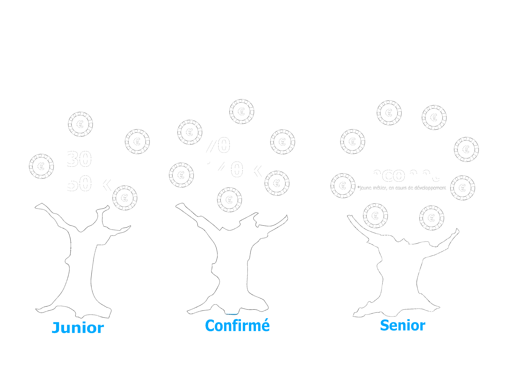

Formation
Diplômes
Bac + 3 à bac + 5 (universités et écoles d’ingénieurs)
- Diplôme d’université délégué à la protection des données data protection officer (Paris II Panthéon Assas).
- Master de “Management et protection des données à caractère personnel” de l’ISEP.
- Master “Sécurité de l’information et des systèmes” de l’ESIA.
- Diplôme de correspondant informatique et libertés de l’Université de Paris Nanterre.
- Diplôme universitaire de DPO / CIL de l’université de Franche Comté.
- MBA spécialisé Management de la *sécurité des données (Institut Léonard de Vinci).
Compétences
Le DPO doit avoir un sens de la communication orale et écrite confirmé. Il doit également avoir un esprit d’entreprise, d’analyse et de synthèse aigu, mais aussi être capable d'analyser et d’interpréter des résultats. Il doit disposer de connaissances métiers du secteur d’activité de son entité, de telle sorte à pouvoir parfaitement appréhender les enjeux de conformité de son entité et les risques que présentent les traitements mis en œuvre par son entité pour les personnes concernées.
Missions
- Informer et conseiller le responsable du traitement, le sous-traitant et les employés de l’organisation afin de se conformer au mieux au RGPD et aux autres lois de protection des données.
- Contrôler le respect du RGPD au sein de l’organisation.
- Gérer les processus de protection des données en internet.
- Former le personnel concerné.
- Réaliser des audits.
- Réaliser une analyse d’impact sur la protection des données.
- Coopérer avec l’autorité de contrôle.

Rôle
Il joue le rôle de chef d’orchestre de la conformité de l’organisation avec le règlement général européen pour la protection des données personnelles (RGPD). C’est également lui qui analyse la conformité d’un traitement de données à caractère personnel, formule des conseils et des exigences, réalise ou pilote des audits.
Salaire
Salaire annuel en milliers d'euros
